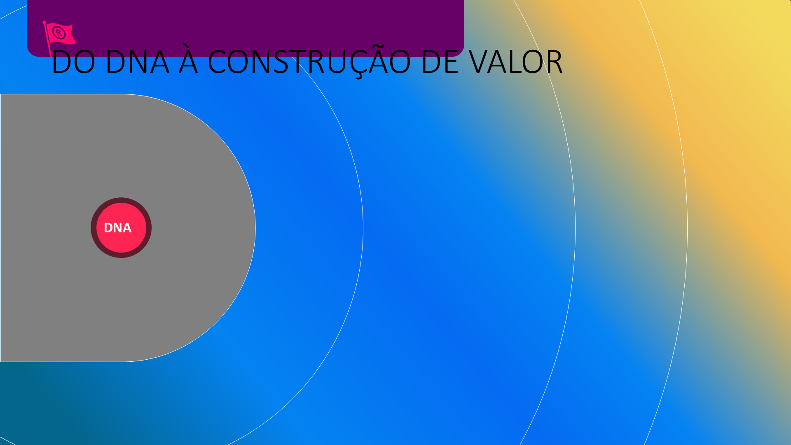
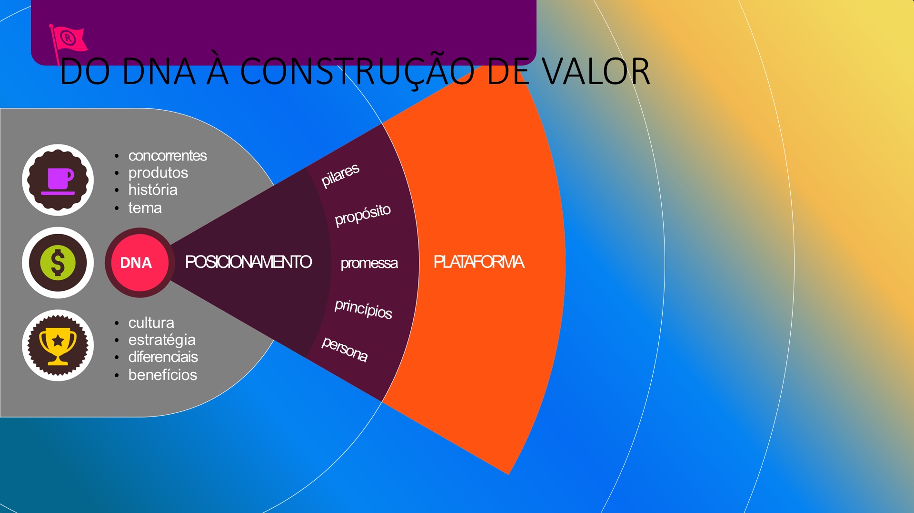
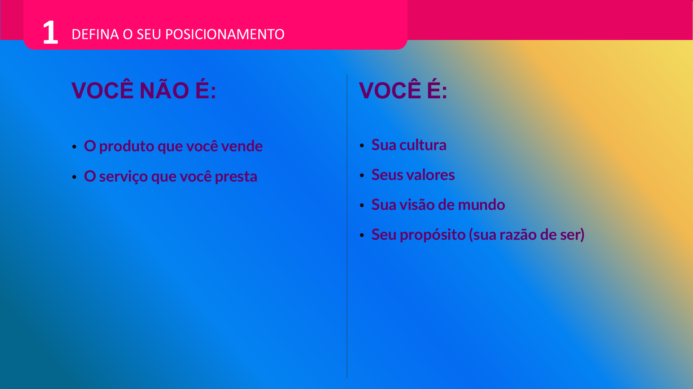
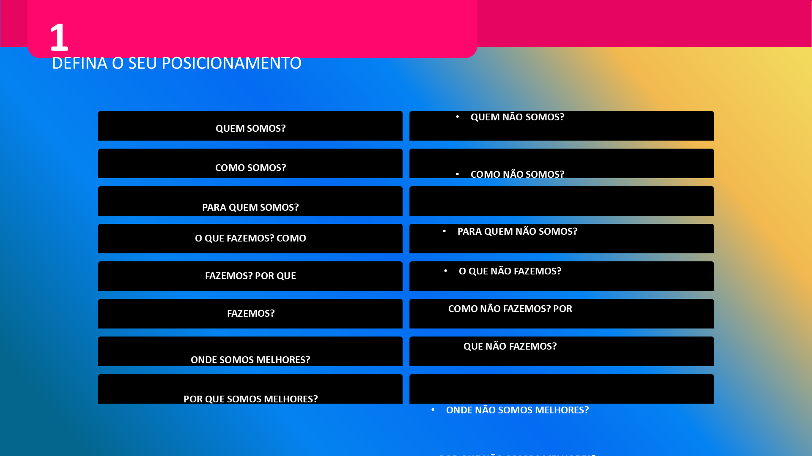

flowchart TB
subgraph NÚCLEO["Núcleo Estratégico"]
PR["Propósito"]
VI["Visão"]
VA["Valores"]
end
subgraph POSICIONAMENTO["Camada de Posicionamento"]
PO["Posicionamento"]
PV["Proposta de Valor"]
DI["Diferenciais"]
end
subgraph PERSONALIDADE["Camada de Expressão"]
PE["Personalidade"]
TV["Tom de Voz"]
NA["Narrativa"]
end
subgraph EXPERIÊNCIA["Camada de Experiência"]
PC["Pontos de Contato"]
VIS["Identidade Visual"]
COM["Comunicação"]
end
NÚCLEO --> POSICIONAMENTO
POSICIONAMENTO --> PERSONALIDADE
PERSONALIDADE --> EXPERIÊNCIA
style NÚCLEO fill:#1b5e20,color:#fff
style POSICIONAMENTO fill:#388e3c,color:#fff
style PERSONALIDADE fill:#66bb6a,color:#000
style EXPERIÊNCIA fill:#a5d6a7,color:#000
13 Plataforma de Marca
A plataforma de marca é o documento que consolida, em uma única estrutura, tudo o que a marca é, acredita, promete e projeta. É o “DNA documentado” que guia decisões, comunicação e experiência. Este capítulo ensina como construir uma plataforma completa para marcas do agronegócio.
13.1 O que é a Plataforma de Marca

Nos capítulos anteriores, construímos peça por peça os elementos estratégicos da marca. Definimos a diferenciação (Capítulo 6, Capítulo 7), articulamos os benefícios que entregamos além do produto (Capítulo 8), caracterizamos o público ideal para quem falamos (Capítulo 10) e estabelecemos o posicionamento que a marca ocupa na mente do mercado (Capítulo 12).
A plataforma de marca é a síntese operacional de todo esse trabalho. É um documento vivo que organiza a essência da marca em componentes claros e acionáveis.
ImportanteA plataforma não é um logotipo
A identidade visual (logotipo, cores, tipografia) é uma consequência da plataforma, não a plataforma em si. O design traduz visualmente o que a plataforma define estrategicamente.
13.2 Componentes da Plataforma de Marca
A plataforma de uma marca do agro se estrutura em camadas, do núcleo à superfície:
13.3 Construindo cada componente
13.3.1 1. Propósito, Por que existimos?

O propósito é a razão de existir da marca para além do lucro. Não é um slogan, é a motivação profunda que move o negócio.
Fórmula prática:
Existimos para [verbo de ação] + [para quem] + [de que forma].
Exemplos no agro:
| Marca fictícia | Propósito |
|---|---|
| Cooperativa Serra Verde | Existimos para conectar pequeños produtores de montanha ao mercado que valoriza alimentos de terroir. |
| Fazenda Raízes | Existimos para provar que pecuária regenerativa gera alimento e restaura ecossistemas simultaneamente. |
| AgroTech Sementes | Existimos para democratizar o acesso a genética de alta performance para agricultores familiares. |
DicaTeste do propósito
Se você trocar o nome da marca por um concorrente e o propósito continuar válido, ele está genérico demais. Reescreva.
13.3.2 2. Visão, Onde queremos chegar?
A visão descreve o futuro desejado, o estado que a marca quer ajudar a construir. Ela deve ser aspiracional mas plausível.
No agro: Evite visões genéricas como “ser líder de mercado”. Conecte a visão ao impacto que o agronegócio pode ter:
“Que todo produtor de café especial do Cerrado seja reconhecido e remunerado pela singularidade do seu terroir.”
13.3.3 3. Valores, Em que acreditamos?

Os valores são os princípios inegociáveis que guiam condutas e decisões. No agro, devem refletir a cultura real do negócio, não aspirações desconectadas da prática.
Construção prática. Comece listando 10 a 15 valores que parecem relevantes, depois elimine os que são “obrigação” (qualidade, honestidade, pois todo mundo espera isso) e mantenha 3 a 5 que realmente diferenciam e orientam decisões difíceis.
Teste de valor. Se o valor nunca gera dilema ou sacrifício, provavelmente é genérico demais. Um valor real implica renúncia, escolher uma coisa em detrimento de outra. Por exemplo, “Qualidade” é esperado e não diferencia, enquanto “Rastreabilidade radical” implica investimento, transparência total e renúncia a atalhos.
13.3.4 4. Proposta de Valor, O que entregamos de diferente?
A proposta de valor é a promessa central da marca, formulada para o público ideal. Ela combina o posicionamento (Capítulo 12) com os benefícios (Capítulo 8):
[Produto/serviço] que entrega [benefício principal] para [público], de forma [diferencial].
13.3.5 5. Personalidade, Se a marca fosse uma pessoa?
A personalidade de marca é o conjunto de traços humanos associados à marca. No agro, a personalidade precisa equilibrar credibilidade técnica com conexão emocional:
quadrantChart
title Personalidade de Marca no Agro
x-axis "Tradicional" --> "Inovadora"
y-axis "Técnica" --> "Emocional"
quadrant-1 "Pioneira Apaixonada"
quadrant-2 "Guardiã do Campo"
quadrant-3 "Especialista Clássica"
quadrant-4 "Cientista do Campo"
"Fazenda Raízes": [0.30, 0.75]
"AgroTech": [0.85, 0.35]
"Cooperativa Serra Verde": [0.40, 0.55]
"Laticínio Artesanal": [0.25, 0.85]
Exercício de personificação:
Se sua marca fosse uma pessoa, que idade teria, como se vestiria, que tipo de música ouviria, como receberia alguém em casa, que assunto dominaria numa conversa e o que a irritaria profundamente?
Essas respostas revelam a personalidade e guiam o tom de toda a comunicação.
13.3.6 6. Tom de Voz, Como a marca fala?
O tom de voz é a tradução da personalidade em linguagem. Define como a marca se comunica em cada ponto de contato:
| Dimensão | Polo A | Polo B |
|---|---|---|
| Formalidade | Formal e institucional | Informal e próxima |
| Humor | Sério e sóbrio | Leve e bem-humorado |
| Entusiasmo | Contido e discreto | Vibrante e empolgado |
| Linguagem | Técnica e precisa | Simples e acessível |
| Posição | Autoridade que ensina | Parceiro que caminha junto |
Para cada dimensão, defina onde sua marca se posiciona no espectro. Isso cria um guia prático para qualquer pessoa que escreva em nome da marca.
Exemplo de tom de voz para uma cooperativa de mel orgânico. A formalidade é informal, como uma conversa entre vizinhos. O humor é leve, nunca sarcástico. O entusiasmo é vibrante quando fala do produto e contido quando fala de dados. A linguagem é acessível, sem jargões técnicos desnecessários. A posição é de parceira do apicultor, nunca superiora.
13.3.7 7. Narrativa, Qual é a história da marca?

Toda marca forte conta uma história. No agro, a narrativa é um ativo poderoso porque o campo é naturalmente rico em elementos narrativos: terra, clima, gerações, luta, colheita, transformação.
Estrutura narrativa para marcas do agro:
A narrativa começa pela origem (de onde viemos, como começou), passa pelo desafio (qual problema enfrentamos ou enxergamos no setor), avaria-se na escolha (o que decidimos fazer diferente), detalha o método (como fazemos o que fazemos, o “jeito” da marca) e culmina no impacto (o que mudou por causa do nosso trabalho).
Exemplo: “A Serra Verde nasceu quando 12 famílias produtoras de café em altitude perceberam que seus cafés especiais eram vendidos como genéricos pelo atravessador. Decidiram se unir, processar localmente e vender com identidade de origem. Hoje, cada lote carrega o nome da família que o cultivou.”
13.4 Ferramentas de Construção
13.4.1 Multissensorialidade da marca
Marcas fortes ativam múltiplos sentidos. No agro, isso é uma vantagem natural:
| Sentido | Perguntas para a marca | Exemplo |
|---|---|---|
| Visão | Quais cores, formas e paisagens representam a marca? | O verde escuro do cafezal sombreado |
| Olfato | Que aromas estão associados ao produto/processo? | O aroma do café recém-torrado |
| Tato | Que textura comunica a marca? | A rugosidade do saco de juta |
| Paladar | Que sabor define a experiência da marca? | A acidez frutada do café em altitude |
| Audição | Que sons representam a marca? | O canto dos pássaros na agrofloresta |
13.4.2 Atributos da marca, Espectro de características
Posicione sua marca em cada par de opostos para definir o perfil de atributos:
| Atributo | ← | → |
|---|---|---|
| Feminina | ◻◻◻◻◻ | Masculina |
| Inovadora | ◻◻◻◻◻ | Conservadora |
| Sofisticada | ◻◻◻◻◻ | Popular |
| Dinâmica | ◻◻◻◻◻ | Tranquila |
| Jovem | ◻◻◻◻◻ | Madura |
| Descontraída | ◻◻◻◻◻ | Séria |
| Informal | ◻◻◻◻◻ | Formal |
| Amigável | ◻◻◻◻◻ | Reservada |
| Diferente | ◻◻◻◻◻ | Comum |
| Simples | ◻◻◻◻◻ | Complexa |
13.5 A plataforma como documento
Ao final do processo, a plataforma se materializa em um documento de referência. Ele pode ter uma ou duas páginas, o importante é que seja consultável e acionável.
Modelo resumido de Plataforma de Marca:
13.5.0.1 🌿 Ferramenta: Canvas da Plataforma de Marca Agro
Marca: _________________
1. Núcleo Estratégico
| Componente | Conteúdo |
|---|---|
| Propósito | Por que existimos? |
| Visão | Que futuro queremos construir? |
| Valores (3-5) | Em que acreditamos? |
2. Posicionamento
| Componente | Conteúdo |
|---|---|
| Público ideal | Para quem existimos? |
| Categoria | Em que mercado competimos? |
| Proposta de valor | O que prometemos de diferente? |
| Razão para acreditar | Por que o público deve confiar? |
3. Expressão
| Componente | Conteúdo |
|---|---|
| Personalidade (3-5 traços) | Se fosse uma pessoa, como seria? |
| Tom de voz | Como fala? Como não fala? |
| Narrativa central (2-3 frases) | Qual é a história da marca? |
| Mapa sensorial | Que sentidos a marca ativa? |
4. Experiência
| Ponto de contato | Como a marca se manifesta |
|---|---|
| Embalagem / rótulo | |
| Redes sociais | |
| Feira / evento | |
| Negociação comercial | |
| Pós-venda / relacionamento |
13.6 Da plataforma à ação
A plataforma de marca só gera valor se for utilizada como ferramenta de decisão no dia a dia:
flowchart TB
PL["Plataforma de Marca"] --> D1["Decisões de produto"]
PL --> D2["Decisões de comunicação"]
PL --> D3["Decisões comerciais"]
PL --> D4["Decisões de experiência"]
D1 --> E1["Que produtos lançar ou descontinuar?"]
D2 --> E2["Que conteúdo publicar? Que tom usar?"]
D3 --> E3["Que clientes buscar? Que preço cobrar?"]
D4 --> E4["Como receber visitantes? Como embalar?"]
style PL fill:#1b5e20,color:#fff
Perguntas de validação para qualquer decisão. Verifique se a ação está alinhada com o propósito, se reforça o posicionamento, se é coerente com a personalidade e o tom de voz, se gera valor para o público ideal e se sustenta os diferenciais.
Se a resposta for “não” para qualquer uma dessas perguntas, a ação precisa ser repensada ou descartada.
13.7 Erros comuns na construção da plataforma
13.7.1 1. Plataforma decorativa
Documento bonito que ninguém consulta. A plataforma precisa estar na mesa de reunião, não na gaveta.
13.7.2 2. Plataforma genérica
Propósito, valores e personalidade que poderiam se aplicar a qualquer empresa de qualquer setor. Se o nome da marca pudesse ser trocado sem alterar o sentido, refaça.
13.7.3 3. Plataforma aspiracional demais
Descrever o que a marca gostaria de ser, em vez do que ela genuinamente é. A plataforma deve capturar a essência real ampliada, não uma fantasia.
13.7.4 4. Plataforma rígida
Tratar a plataforma como imutável. Ela deve ser estável nos elementos nucleares (propósito, valores) mas flexível nos elementos de expressão (tom, narrativa), que podem evoluir com o mercado.
13.7.5 5. Plataforma sem dono
Ninguém na organização é responsável por garantir que a plataforma seja seguida. Designe um “guardião da marca”, no agro familiar, geralmente é quem toma as decisões comerciais e de comunicação.